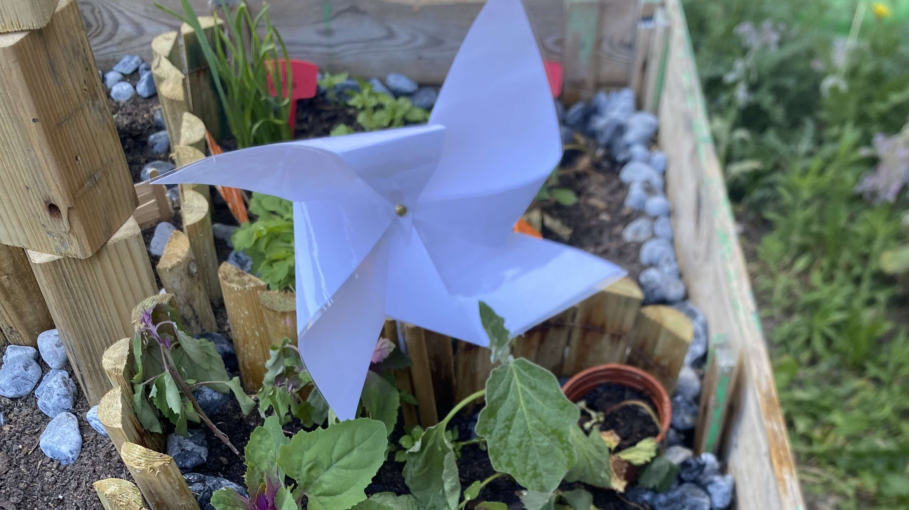

Conception du Site
Étape 1 : Les Idées
Lors de cette étape, nous avons discuté des fonctionnalités du site et de son design. Nous avons réfléchi à l'ergonomie et à l'expérience utilisateur, tout en imaginant comment rendre le site interactif et attrayant.
Étape 2 : Insertion du Thème et des Boutons GIF
Nous avons ensuite choisi un thème sombre pour garder une continuité avec le design des autres sections. Pour rendre le site plus dynamique, nous avons intégré des boutons GIF animés. Ces boutons ajoutent une touche interactive au site.

Étape 3 : Répartition des Tâches
Chacun de nous a pris en charge des tâches spécifiques : certains se sont concentrés sur la partie front-end (HTML/CSS), tandis que d'autres ont travaillé sur l'intégration des fonctionnalités JavaScript et l'optimisation du site pour les appareils mobiles.

Étape 4 : Le Code
Enfin, nous avons passé du temps à coder, tester, et améliorer le site pour qu'il soit fonctionnel et esthétique. Voici un aperçu du code utilisé pour créer le site.

Projets Scientifiques
Projet 1 : L'Éolienne
Pour ce projet, nous avons conçu une éolienne fonctionnelle en utilisant des matériaux recyclés. L'objectif était de comprendre comment les éoliennes génèrent de l'énergie à partir du vent.

Matériaux Utilisés
- Bois recyclé pour la structure
- Plastic pour les pales
- Moteur électrique pour transformer l'énergie du vent
Comment cela a été réalisé
Nous avons d'abord conçu un modèle de l'éolienne, puis avons découpé et assemblé les pièces en utilisant les matériaux choisis. Le moteur a été relié aux pales pour générer de l'électricité à chaque rotation.
Projet 2 : Le Pont
Dans ce projet, nous avons conçu un pont miniature pour tester la résistance des matériaux et la capacité à supporter des charges. L'objectif était de créer un pont solide et stable.

Matériaux Utilisés
- Planche de bois
- Vis pour l'assemblage
- Carrés en bois récupéré
Comment cela a été réalisé
Après avoir dessiné les plans du pont, nous avons découpé la planche pour la base et nous avons installés dessus les carrés en bois que nous avons récupéré. Ensuite, nous les avons les avons vissés pour consolider le tout.
Projet 3 : Le Chevalet
Nous avons monté ce chevalet coté terre pour rajouter une décoration en rapport avec notre région, c'est une représentation du chevalet "Le Vieux 2" de Marles-les-Mines

Matériaux Utilisés
- Bois pour la structure
- Colle pour faire tenir certaines pièces
- Emboitement des pièces pour la majeur partie de la construction
- Verni colle pour eviter la déterioration du chevalet
Comment cela a été réalisé
Nous avons suivi les instrutions du kit prédécoupé, nous avons fait l'assemblage en collant chaques parties avec de la colle à bois. Une fois fini, nous avons verni le tout.
Projet 4 : Les poteries
Les enfants ont voulu faire de la poterie afin de representer les éléments introduits dans le carré potager

Matériaux Utilisés
- Pâte à modeler durcissante à l'air, effet pierre
- Peinture pour poterie
- Vernis
Comment cela a été réalisé
Nous avons modelé la forme d'une goutte d'eau, d'une flamme, d'un nuage, d'une feuille et d'un totem représentant les 4 en même temps, puis nous les avons peints dans leurs couleurs respectives avant de les vernir pour les proteger des intempéries
Projet 5 : Le Volcan
Afin de représenter le feu, nous avons choisis la structure qui le représente le plus : le Volcan

Matériaux Utilisés
- Plastique pour imprimante 3D PLA
- Peinture
- Vernis
Comment cela a été réalisé
Christophe, l'animateur des samedis scientifiques, à créé le fichier de conception du volcan, les enfants l'ont ensuite réalisé avec l'imprimante 3D
Projet 6 : La Péniche
Element important dans l'histoire du Nord et du transport de marchandises, nous avons décidé de le symboliser dans ce carré
Matériaux Utilisés
- Bois
- Peinture
- Colle forte
- Griallage en plastique
Comment cela a été réalisé
Louis, enfant des samedis scientifiques, s'est lancé dans la conception de cette péniche en assemblant des morceaux de bois avec de la colle forte et y a ajouté du grillage en plastique pour représenter les bords de la péniche
Carnet de Bord
Carré Potager
Bienvenue dans notre Carré Potager
Un projet alliant nature, technologie et savoir-faire culinaire
Journal de Bord
Semaine 1
- Préparation du terrain
- Plantation des premières graines
- Arrosage initial

Semaine 2
- Installation des tuteurs
- Ajout de compost
- Observation de la germination

Semaine 3
- Commencement de la création des décors
- Création des poteries
- Arrosage et obseravtion de l'évolution
Semaine 4
- Installation de la bâche du côté Eau
- Mise en place des plantes aquatiques

Semaine 5
- Ponçage des planches du carré potager
- Entretien et arrosage
- Completion du carnet de bord

Conception du Site
Étape 1 : Les Idées
Lors de cette étape, nous avons discuté des fonctionnalités du site et de son design. Nous avons réfléchi à l'ergonomie et à l'expérience utilisateur, tout en imaginant comment rendre le site interactif et attrayant.
Étape 2 : Insertion du Thème et des Boutons GIF
Nous avons ensuite choisi un thème sombre pour garder une continuité avec le design des autres sections. Pour rendre le site plus dynamique, nous avons intégré des boutons GIF animés. Ces boutons ajoutent une touche interactive au site.
Étape 3 : Répartition des Tâches
Chacun de nous a pris en charge des tâches spécifiques : certains se sont concentrés sur la partie front-end (HTML/CSS), tandis que d'autres ont travaillé sur l'intégration des fonctionnalités JavaScript et l'optimisation du site pour les appareils mobiles.
Étape 4 : Le Code
Enfin, nous avons passé du temps à coder, tester, et améliorer le site pour qu'il soit fonctionnel et esthétique. Voici un aperçu du code utilisé pour créer le site.
Projets Scientifiques
Projet 1 : L'Éolienne
Pour ce projet, nous avons conçu une éolienne fonctionnelle en utilisant des matériaux recyclés. L'objectif était de comprendre comment les éoliennes génèrent de l'énergie à partir du vent.
Matériaux Utilisés
- Bois recyclé pour la structure
- Plastic pour les pales
- Moteur électrique pour transformer l'énergie du vent
Comment cela a été réalisé
Nous avons d'abord conçu un modèle de l'éolienne, puis avons découpé et assemblé les pièces en utilisant les matériaux choisis. Le moteur a été relié aux pales pour générer de l'électricité à chaque rotation.
Projet 2 : Le Pont
Dans ce projet, nous avons conçu un pont miniature pour tester la résistance des matériaux et la capacité à supporter des charges. L'objectif était de créer un pont solide et stable.
Matériaux Utilisés
- Planche de bois
- Vis pour l'assemblage
- Carrés en bois récupéré
Comment cela a été réalisé
Après avoir dessiné les plans du pont, nous avons découpé la planche pour la base et nous avons installés dessus les carrés en bois que nous avons récupéré. Ensuite, nous les avons les avons vissés pour consolider le tout.
Projet 3 : Le Chevalet
Nous avons monté ce chevalet coté terre pour rajouter une décoration en rapport avec notre région, c'est une représentation du chevalet "Le Vieux 2" de Marles-les-Mines
Matériaux Utilisés
- Bois pour la structure
- Colle pour faire tenir certaines pièces
- Emboitement des pièces pour la majeur partie de la construction
- Verni colle pour eviter la déterioration du chevalet
Comment cela a été réalisé
Nous avons suivi les instrutions du kit prédécoupé, nous avons fait l'assemblage en collant chaques parties avec de la colle à bois. Une fois fini, nous avons verni le tout.
Projet 4 : Les poteries
Les enfants ont voulu faire de la poterie afin de representer les éléments introduits dans le carré potager
Matériaux Utilisés
- Pâte à modeler durcissante à l'air, effet pierre
- Peinture pour poterie
- Vernis
Comment cela a été réalisé
Nous avons modelé la forme d'une goutte d'eau, d'une flamme, d'un nuage, d'une feuille et d'un totem représentant les 4 en même temps, puis nous les avons peints dans leurs couleurs respectives avant de les vernir pour les proteger des intempéries
Projet 5 : Le Volcan
Afin de représenter le feu, nous avons choisis la structure qui le représente le plus : le Volcan
Matériaux Utilisés
- Plastique pour imprimante 3D PLA
- Peinture
- Vernis
Comment cela a été réalisé
Christophe, l'animateur des samedis scientifiques, à créé le fichier de conception du volcan, les enfants l'ont ensuite réalisé avec l'imprimante 3D
Projet 6 : La Péniche
Element important dans l'histoire du Nord et du transport de marchandises, nous avons décidé de le symboliser dans ce carré
Matériaux Utilisés
- Bois
- Peinture
- Colle forte
- Griallage en plastique
Comment cela a été réalisé
Louis, enfant des samedis scientifiques, s'est lancé dans la conception de cette péniche en assemblant des morceaux de bois avec de la colle forte et y a ajouté du grillage en plastique pour représenter les bords de la péniche
Soupe de Légumes du Potager
Ingrédients :
- Carottes
- Pommes de terre
- Poireaux
- Oignon
- Herbes fraîches (persil, thym)
- Sel et poivre
Recette :
- Pelez et coupez tous les légumes en morceaux.
- Faites cuire les légumes dans une grande casserole d'eau pendant environ 30 minutes.
- Ajoutez les herbes, le sel et le poivre. Laissez mijoter 10 minutes supplémentaires.
- Mixez le tout pour obtenir une soupe lisse et onctueuse.
- Sers chaud, accompagné de pain frais.
Gauffre de pommes de terre bleue d'Artois ou Vitelotte

Ingrédients :
- 200g de Pommes de terre bleue d'Artois ou Vitelotte Prince de Bretagne
- 100g de farine
- 50cl de lait
- 2 œuf (1 entier et 1 blanc d'œuf)
- 50g de beurre
- 1 sachet de levure
- herbes de provence
- sel et poivre
Recette :
- Lavez, épluchez et râpez les pommes de terre. Retirez l'eau des pommes de terre en les pressant dans un tamis ou une passoire.
- Dans un saladier, mélangez ensemble la farine, la levure et les pommes de terre râpées.
- Ajoutez l'œuf entier et le blanc d'œuf, mélangez. Versez le lait petit à petit, tout en mélangeant la préparation. Enfin, faites fondre le beurre et ajoutez-le au mélange.
- Assaisonnez avec du sel, un peu de poivre et des herbes de Provence.
- Faites reposer la pâte au réfrigérateur 20 mn. Allumez le gaufrier et laissez le chauffer.
- Verser la pâte dans le gaufrier et laissez cuire. Servez les gaufres à l'apéro avec une crème au fromage frais et ciboulette ou en entré e avec une petite salade.
Gateau au pavot

Ingrédients :
- 150g de sucre
- 150g de farine
- 3 œuf
- 100g de beurre
- ½ sachet de levure
- zeste de citron
- 2 cuillères à soupe de pavot (si possible bio)
Recette :
- Mélanger le tout (l'ordre n'a pas d'importance) et verser dans un moule à cake beurré.
- Mettre au four préchauffé, pendant environ 40 mn à Th 6 ou 7.
Gateau à la bettrave

Ingrédients :
- 150g de sucre
- 50g de farine
- 3 œuf
- 130g de beurre
- 1 cuillère à café de levure
- 1 cuillère à café d'extrait de vanille
- 250g de bettraves
- 200g de chocolat noir
- 50g d'amandes en poudre
- 40g de cacao en poudre
- cerneau de noix (facultaitif)
Recette :
- Préchauffer le four à 180°C
- Sortir les 130 g de beurre du réfrigérateur et le laisser à température ambiante.
- Mixer finement les betteraves cuites pour obtenir une purée.
- Faire fondre le chocolat au bain-marie.
- Mélanger le beurre avec les œufs et le chocolat de façon homogène.
- Ajouter le sucre, la farine, la vanille, les amandes, les cerneaux de noix et mélanger.
- Incorporer la purée de betteraves, le cacao et la levure, mélanger et bien et verser la pâte à gâteau dans un moule préalablement beurré.
- Enfourner pour 30 à 35 minutes de cuisson en vérifiant régulièrement avec la pointe d'un couteau.
- Une fois le gâteau cuit, le laisser refroidir avant de le démouler puis déguster.
Carnet de Bord